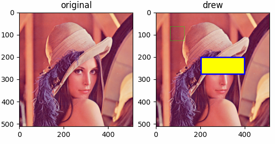
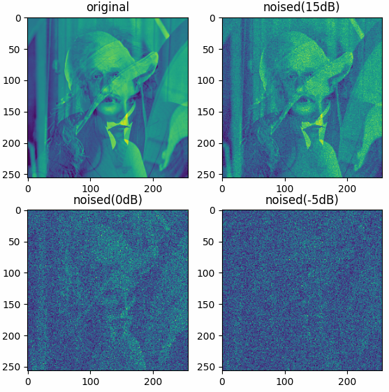
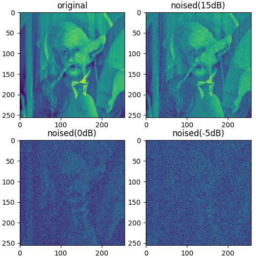
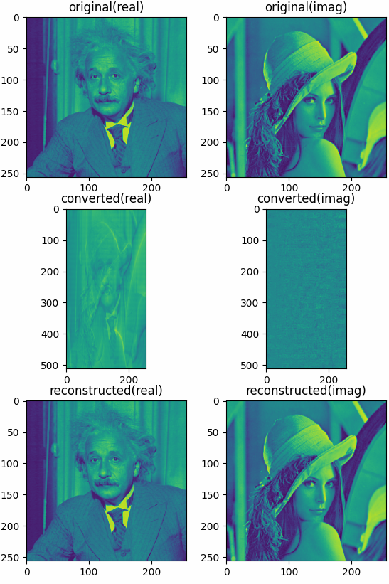

torchbox.misc package
Submodules
torchbox.misc.draw_shapes module
- torchbox.misc.draw_shapes.draw_eclipse(x, centroids, aradii, bradii, edgecolors=[255, 0, 0], linewidths=1, fillcolors=None, axes=(-2, -1))
- torchbox.misc.draw_shapes.draw_rectangle(x, rects, edgecolors=[[255, 0, 0]], linewidths=[1], fillcolors=[None], axes=(-3, -2))
Draw rectangles in a tensor
- Parameters
x (Tensor) – The input with any size.
rects (list or tuple) – The coordinates of the rectangles [[top-left, bottom-right]].
edgecolors (list, optional) – The color of edge.
linewidths (int, optional) – The linewidths of edge.
fillcolors (int, optional) – The color for filling.
axes (int, optional) – The axes for drawing the rect (default [(-3, -2)]).
- Returns
y – The tensors with rectangles.
- Return type
Tensor
Examples
The results shown in the above figure can be obtained by the following codes.
import torchbox as tb datafolder = tb.data_path('optical') x = tb.imread(datafolder + 'LenaRGB512.tif') print(x.shape) # rects, edgecolors, fillcolors, linewidths = [[0, 0, 511, 511]], [None], [[0, 255, 0]], [1] # rects, edgecolors, fillcolors, linewidths = [[0, 0, 511, 511]], [[255, 0, 0]], [None], [1] # rects, edgecolors, fillcolors, linewidths = [[0, 0, 511, 511]], [[255, 0, 0]], [[0, 255, 0]], [1] rects, edgecolors, fillcolors, linewidths = [[64, 64, 128, 128], [200, 200, 280, 400]], [[0, 255, 0], [0, 0, 255]], [None, [255, 255, 0]], [1, 6] y = tb.draw_rectangle(x, rects, edgecolors=edgecolors, linewidths=linewidths, fillcolors=fillcolors, axes=[(0, 1)]) tb.imsave('out.png', y) plt = tb.imshow([x, y], titles=['original', 'drew']) plt.show()
{kind=link}
torchbox.misc.mapping_operation module
- torchbox.misc.mapping_operation.mapping(X, drange=(0.0, 255.0), mode='amplitude', method='2Sigma', odtype='auto')
convert to image
Convert data to image data \(\bm X\) with dynamic range \(d=[min, max]\).
- Parameters
X (Tensor) – data to be converted
drange (tuple, optional) – dynamic range (the default is (0., 255.))
mode (str, optional) – data mode in
X,'amplitude'(default) or'power'.method (str, optional) – converting method, surpported values are
'1Sigma','2Sigma','3Sigma'(the default is ‘2Sigma’, which means two-sigma mapping)odtype (str or None, optional) – output data type, supportted are
'auto'(auto infer, default), or torch tensor’s dtype string. If the type ofodtypeis not string, the output data type is'th.float32'.
- Returns
Y – converted image data
- Return type
Tensor
torchbox.misc.noising module
- torchbox.misc.noising.awgn(sig, snrv=30, pmode='db', power='measured', seed=None, retall=False)
AWGN Add white Gaussian noise to a signal.
AWGN Add white Gaussian noise to a signal like matlab.
Y = AWGN(X,snrv) adds white Gaussian noise to X. The snrv is in dB. The power of X is assumed to be 0 dBW. If X is complex, then AWGN adds complex noise.
- Parameters
sig (Tensor) – Signal that will be noised.
snrv (float, optional) – Signal Noise Ratio (the default is 30)
pmode (str, optional) – Power mode
'linear','db'(the default is ‘db’)power (float, str, optional) – the power of signal or the method for computing power (the default is ‘measured’, which is sigPower = th.sum(th.abs(sig) ** 2) / sig.numel())
seed (int, optional) – Seed for random number generator. (the default is None, which means different each time)
retall (bool, optional) – If
True, noise will also be returned.
- Returns
noised data
- Return type
tensor
- Raises
- torchbox.misc.noising.awgns(x, snrv, **kwargs)
adds white gaussian noise to signal
see Adding noise with a desired signal-to-noise ratio .
- Parameters
x (Tensor) – The pure signal data.
snrv (int or float) – The signal-to-noise ratio value in dB.
cdim (None or int, optional) – If
xis complex-valued but represented in real format,cdimorcaxisshould be specified. If not, it’s set toNone, which meansxis real-valued or complex-valued in complex format.dim (int or None, optional) – Specifies the dimensions for adding noise, if not specified, it’s set to
None, which means all the dimensions.seed (int or None, optional) – Specifies the seed for generating random noise, if not specified, it’s set to
None.retall (bool, optional) – If
True, noise will also be returned.
- Returns
y (Tensor) – The noised tensor.
see also
awgns2().
Examples
import torch as th import torchbox as tb tb.setseed(2020) x = th.randn(5, 2, 3, 4) x = tb.r2c(x, cdim=1) # 5, 3, 4 y, n = awgns(x, 30, dim=(1, 2), seed=2022, retall=True) snrv = tb.snr(y, n, dim=(1, 2)) print(snrv, 'complex-valued in complex-format') tb.setseed(2020) x = th.randn(5, 2, 3, 4) y, n = awgns(x, 30, cdim=1, dim=(2, 3), seed=2022, retall=True) snrv = tb.snr(y, n, cdim=1, dim=(2, 3)) print(snrv, 'complex-valued in real-format') tb.setseed(2020) x = th.randn(5, 2, 3, 4) y, n = awgns(x, 30, cdim=None, dim=(1, 2, 3), seed=2022, retall=True) snrv = tb.snr(y, n, cdim=None, dim=(1, 2, 3)) print(snrv, 'real-valued in real-format') tb.setseed(2020) x = th.randn(5, 2, 3, 4) y, n = awgns2(x, 30, cdim=1, dim=(2, 3), seed=2022, retall=True) snrv = tb.snr(y, n, cdim=1, dim=(2, 3)) print(snrv, 'real-valued in real-format, multi-channel') # ---output tensor([30.0846, 30.0605, 29.9890, 30.0245, 30.0455]) complex-valued in complex-format tensor([30.0846, 30.0605, 29.9890, 30.0245, 30.0455]) complex-valued in real-format tensor([30.1311, 30.0225, 30.0763, 30.0549, 30.1034]) real-valued in real-format tensor([30.1033, 30.0459, 29.9889, 29.8461, 29.9115]) real-valued in real-format, multi-channel
- torchbox.misc.noising.awgns2(x, snrv, **kwargs)
adds white gaussian noise to multi-channel signal
see Adding noise with a desired signal-to-noise ratio .
- Parameters
x (Tensor) – The pure real-valued multi-channel signal data.
snrv (int or float) – The signal-to-noise ratio value in dB.
cdim (None or int, optional) – Specifies the channel dimension. If not specified,
xwill be treated as single-channel signal.dim (int or None, optional) – Specifies the dimensions for adding noise, if not specified, it’s set to
None, which means all the dimensions.seed (int or None, optional) – Specifies the seed for generating random noise, if not specified, it’s set to
None.retall (bool, optional) – If
True, noise will also be returned.
- Returns
y (Tensor) – The SNRs.
see also
awgns().
Examples
The results shown in the above figure can be obtained by the following codes.
datafolder = tb.data_path('optical') xr = tb.imread(datafolder + 'Einstein256.png') xi = tb.imread(datafolder + 'LenaGRAY256.png') x = xr + 1j * xi x = tb.c2r(x, cdim=-1) print(x.shape) xnp15, np15 = tb.awgns2(x, snrv=15, cdim=-1, dim=(0, 1), retall=True) xn0, n0 = tb.awgns2(x, snrv=0, cdim=-1, dim=(0, 1), retall=True) xnn5, nn5 = tb.awgns2(x, snrv=-5, cdim=-1, dim=(0, 1), retall=True) print(tb.snr(x, np15, cdim=-1, dim=(0, 1))) print(tb.snr(x, n0, cdim=-1, dim=(0, 1))) print(tb.snr(x, nn5, cdim=-1, dim=(0, 1))) x = tb.abs(x, cdim=-1) xnp15 = tb.abs(xnp15, cdim=-1) xn0 = tb.abs(xn0, cdim=-1) xnn5 = tb.abs(xnn5, cdim=-1) plt = tb.imshow([x, xnp15, xn0, xnn5], titles=['original', 'noised(15dB)', 'noised(0dB)', 'noised(-5dB)']) plt.show()
{kind=link}
- torchbox.misc.noising.imnoise(x, noise='awgn', snrv=30, fmt='chnllast')
Add noise to image
Add noise to each channel of the image.
- Parameters
x (Tensor) – image aray
noise (str, optional) – noise type (the default is ‘awgn’, which means white gaussian noise, using
awgn())snrv (float, optional) – Signal-to-noise ratio (the default is 30, which [default_description])
peak (None, str or float) – Peak value in input, if None, auto detected (default), if
'maxv', use the maximum value as peak value.fmt (str or None, optional) – for color image,
fmtshould be specified with'chnllast'or'chnlfirst', for gray image,fmtshould be setted toNone.
- Returns
Images with added noise.
- Return type
tensor
Examples
The results shown in the above figure can be obtained by the following codes.
datafolder = tb.data_path('optical') xr = tb.imread(datafolder + 'Einstein256.png') xi = tb.imread(datafolder + 'LenaGRAY256.png') x = xr + 1j * xi xnp15 = tb.imnoise(x, 'awgn', snrv=15) xn0 = tb.imnoise(x, 'awgn', snrv=0) xnn5 = tb.imnoise(x, 'awgn', snrv=-5) x = tb.abs(x, cdim=None) xnp15 = tb.abs(xnp15, cdim=None) xn0 = tb.abs(xn0, cdim=None) xnn5 = tb.abs(xnn5, cdim=None) plt = tb.imshow([x, xnp15, xn0, xnn5], titles=['original', 'noised(15dB)', 'noised(0dB)', 'noised(-5dB)']) plt.show() datafolder = tb.data_path('optical') xr = tb.imread(datafolder + 'Einstein256.png') xi = tb.imread(datafolder + 'LenaGRAY256.png') x = xr + 1j * xi x = tb.c2r(x, cdim=-1) print(x.shape, x.max()) xnp15 = tb.imnoise(x, 'awgn', snrv=15) xn0 = tb.imnoise(x, 'awgn', snrv=0) xnn5 = tb.imnoise(x, 'awgn', snrv=-5) x = tb.abs(x, cdim=-1) xnp15 = tb.abs(xnp15, cdim=-1) xn0 = tb.abs(xn0, cdim=-1) xnn5 = tb.abs(xnn5, cdim=-1) plt = tb.imshow([x, xnp15, xn0, xnn5], titles=['original', 'noised(15dB)', 'noised(0dB)', 'noised(-5dB)']) plt.show()
{kind=link}
- torchbox.misc.noising.wgn(shape, power, pmode='dbw', dtype='real', seed=None, device='cpu')
WGN Generates white Gaussian noise.
WGN Generates white Gaussian noise like matlab.
Y = WGN((M,N),P) generates an M-by-N matrix of white Gaussian noise. P specifies the power of the output noise in dBW. The unit of measure for the output of the wgn function is Volts. For power calculations, it is assumed that there is a load of 1 Ohm.
- Parameters
shape (tuple) – Shape of noising matrix
power (float) – P specifies the power of the output noise in dBW.
pmode (str, optional) – Power mode of the output noise (the default is ‘dbw’)
dtype (str, optional) – data type, real or complex (the default is ‘real’, which means real-valued)
seed (int, optional) – Seed for random number generator. (the default is None, which means different each time)
device (str, optional) – The device
- Returns
Matrix of white Gaussian noise (real or complex).
- Return type
tensor
torchbox.misc.sampling module
- torchbox.misc.sampling.dnsampling(x, ratio=1.0, dim=-1, smode='uniform', omode='discard', seed=None, retall=False)
Summary
- Parameters
x (Tensor) – The Input tensor.
ratio (float, optional) – Downsampling ratio.
dim (int, optional) – Downsampling axis (default -1).
smode (str, optional) – Downsampling mode:
'uniform','random','random2'.omode (str, optional) – output mode:
'discard'for discarding,'zero'for zero filling.seed (int or None, optional) – seed for torch’s random.
retall (bool, optional) – If
True, also return sampling mask.
- Returns
downsampled data.
- Return type
(Tensor)
- Raises
TypeError –
axisValueError –
ratio, attr:smode, attr:omode
- torchbox.misc.sampling.patch2tensor(p, size=(256, 256), dim=(1, 2), start=(0, 0), stop=(None, None), step=None, mode='nfirst')
merge patch to a tensor
- Parameters
p (Tensor) – A tensor of patches.
size (tuple, optional) – Merged tensor size in the dimension (the default is (256, 256)).
dim (tuple, optional) – Merged axis of patch (the default is (1, 2))
start (tuple, optional) – start position for placing patch (the default is (0, 0))
stop (tuple, optional) – stop position for placing patch (the default is (0, 0))
step (tuple, optional) – step size for placing patch (the default is
None, which means the size of patch)mode (str, optional) – Patch mode
'nfirst'or'nlast'(the default is ‘nfirst’, which means the first dimension is the number of patches)
- Returns
Merged tensor.
- Return type
Tensor
- torchbox.misc.sampling.read_samples(datafiles, keys=[['SI', 'ca', 'cr']], nsamples=[10], groups=[1], mode='sequentially', dim=0, parts=None, seed=None)
Read samples
- Parameters
datafiles (list) – list of path strings
keys (list, optional) – data keys to be read
nsamples (list, optional) – number of samples for each data file
groups (list, optional) – number of groups in each data file
mode (str, optional) – sampling mode for all datafiles
dim (int, optional) – sampling axis for all datafiles
parts (None, optional) – number of parts (split samples into some parts)
seed (None, optional) – the seed for random stream
- Returns
samples
- Return type
tensor
- Raises
ValueError –
nsamplesshould be large enough
- torchbox.misc.sampling.sample_tensor(x, n, dim=0, groups=1, mode='sequentially', seed=None, retall=False)
sample a tensor
Sample a tensor sequentially/uniformly/randomly.
- Parameters
x (torch.Tensor) – a torch tensor to be sampled
n (int) – sample number
dim (int, optional) – the axis to be sampled (the default is 0)
groups (int, optional) – number of groups in this tensor (the default is 1)
mode (str, optional) –
'sequentially': evenly spaced (default)'uniformly': [0, int(n/groups)]'randomly': randomly selected, non-returned sampling
seed (None or int, optional) – only work for
'randomly'mode (the default is None)retall (bool, optional) – If
True, also return the selected indexes, the default isFalse.
- Returns
Sampled torch tensor. idx (list): Sampled indexes, if
retallisTrue, this will also be returned.- Return type
y (torch.Tensor)
Example
setseed(2020, 'torch') x = th.randint(1000, (20, 3, 4)) y1, idx1 = sample_tensor(x, 10, axis=0, groups=2, mode='sequentially', retall=True) y2, idx2 = sample_tensor(x, 10, axis=0, groups=2, mode='uniformly', retall=True) y3, idx3 = sample_tensor(x, 10, axis=0, groups=2, mode='randomly', retall=True) print(x.shape) print(y1.shape) print(y2.shape) print(y3.shape) print(idx1) print(idx2) print(idx3) the outputs are as follows: torch.Size([20, 3, 4]) torch.Size([10, 3, 4]) torch.Size([10, 3, 4]) torch.Size([10, 3, 4]) [0, 1, 2, 3, 4, 10, 11, 12, 13, 14] [0, 2, 4, 6, 8, 10, 12, 14, 16, 18] [3, 1, 5, 8, 7, 17, 18, 13, 16, 10]
- Raises
ValueError – The tensor does not has enough samples.
- torchbox.misc.sampling.shuffle_tensor(x, dim=0, groups=1, mode='inter', seed=None, retall=False)
shuffle a tensor
Shuffle a tensor randomly.
- Parameters
x (Tensor) – A torch tensor to be shuffled.
dim (int, optional) – The axis to be shuffled (default 0)
groups (number, optional) – The number of groups in this tensor (default 1)
mode (str, optional) –
'inter': between groups (default)'intra': within group'whole': the whole
seed (None or number, optional) – random seed (the default is None)
retall (bool, optional) – If
True, also returns the shuffle indexes, the default isFalse.
- Returns
Shuffled torch tensor. idx (list): Shuffled indexes, if
retallisTrue, this will also be returned.- Return type
y (Tensor)
Example
setseed(2020, 'torch') x = th.randint(1000, (20, 3, 4)) y1, idx1 = shuffle_tensor(x, axis=0, groups=4, mode='intra', retall=True) y2, idx2 = shuffle_tensor(x, axis=0, groups=4, mode='inter', retall=True) y3, idx3 = shuffle_tensor(x, axis=0, groups=4, mode='whole', retall=True) print(x.shape) print(y1.shape) print(y2.shape) print(y3.shape) print(idx1) print(idx2) print(idx3) the outputs are as follows: torch.Size([20, 3, 4]) torch.Size([20, 3, 4]) torch.Size([20, 3, 4]) torch.Size([20, 3, 4]) [1, 0, 3, 4, 2, 8, 6, 5, 9, 7, 13, 11, 12, 14, 10, 18, 15, 17, 16, 19] [0, 1, 2, 3, 4, 10, 11, 12, 13, 14, 5, 6, 7, 8, 9, 15, 16, 17, 18, 19] [1, 13, 12, 5, 19, 9, 11, 6, 4, 16, 17, 3, 8, 18, 7, 10, 15, 0, 14, 2]
- torchbox.misc.sampling.slidegrid(start, stop, step, shake=0, n=None)
generates sliding grid indexes
Generates
nsliding grid indexes fromstarttostopwith step sizestep.- Parameters
- Returns
for multi-dimension, return a 2-d tensor, for 1-dimension, return a 1d-tensor.
- Raises
TypeError – The number of samples should be an integer or None.
see also
randperm(),randgrid().
- torchbox.misc.sampling.split_tensor(x, ratios=[0.7, 0.2, 0.1], dim=0, shuffle=False, seed=None, retall=False)
split tensor
split a tensor into some parts.
- Parameters
x (Tensor) – A torch tensor.
ratios (list, optional) – Split ratios (the default is [0.7, 0.2, 0.05])
dim (int, optional) – Split axis (the default is 0)
shuffle (bool, optional) – Whether shuffle (the default is False)
seed (int, optional) – Shuffule seed (the default is None)
retall (bool, optional) – If
True, also return the split indexes, the default isFalse.
- Returns
Splitted tensors.
- Return type
(list of Tensor)
- torchbox.misc.sampling.tensor2patch(x, n=None, size=(32, 32), dim=(0, 1), start=(0, 0), stop=(None, None), step=(1, 1), shake=(0, 0), mode='slidegrid', seed=None)
sample patch from a tensor
Sample some patches from a tensor, tensor and patch can be any size.
- Parameters
x (Tensor) – Tensor to be sampled.
n (int, optional) – The number of pactches, the default is None, auto computed, equals to the number of blocks with specified
stepsize (tuple or int, optional) – The size of patch (the default is (32, 32))
dim (tuple or int, optional) – The sampling axis (the default is (0, 1))
start (tuple or int, optional) – Start sampling index for each axis (the default is (0, 0))
stop (tuple or int, optional) – Stopp sampling index for each axis. (the default is (None, None), which [default_description])
step (tuple or int, optional) – Sampling stepsize for each axis (the default is (1, 1), which [default_description])
shake (tuple or int or float, optional) – float for shake rate, int for shake points (the default is (0, 0), which means no shake)
mode (str, optional) – Sampling mode,
'slidegrid','randgrid','randperm'(the default is ‘slidegrid’)seed (int, optional) – Random seed. (the default is None, which means no seed.)
- Returns
A Tensor of sampled patches.
- Return type
(Tensor)
torchbox.misc.transform module
- torchbox.misc.transform.ct2rt(x, dim=0)
Converts a complex-valued tensor to a real-valued tensor
Converts a complex-valued tensor \({\bf x}\) to a real-valued tensor with FFT and conjugate symmetry.
- Parameters
x (Tensor) – The input tensor \({\bf x}\).
dim (int) – The axis for excuting FFT.
- Returns
Tensor – The output tensor \({\bf y}\).
see also
rt2ct().
Examples
The results shown in the above figure can be obtained by the following codes.
import torchbox as tb datafolder = tb.data_path('optical') xr = tb.imread(datafolder + 'Einstein256.png') xi = tb.imread(datafolder + 'LenaGRAY256.png') x = xr + 1j * xi y = tb.ct2rt(x, dim=0) z = tb.rt2ct(y, dim=0) print(x.shape, y.shape, z.shape) print(x.dtype, y.dtype, z.dtype) print(x.abs().min(), x.abs().max()) print(y.abs().min(), y.abs().max()) print(z.abs().min(), z.abs().max()) plt = tb.imshow([x.real, x.imag, y.real, y.imag, z.real, z.imag], nrows=3, ncols=2, titles=['original(real)', 'original(imag)', 'converted(real)', 'converted(imag)', 'reconstructed(real)', 'reconstructed(imag)']) plt.show()
{kind=link}
- torchbox.misc.transform.db20(x)
Computes dB value of a tensor
- Parameters
x (Tensor) – The input tensor.
- Returns
The output tensor (dB)
- Return type
Tensor
- torchbox.misc.transform.quantization(X, idrange=None, odrange=[0, 31], odtype='auto', retall=False)
Quantize data.
\[x \in [a, b] \rightarrow y \in [c, d] \]\[y = (d-c)(x-a) / (b-a) + c. \]- Parameters
X (Tensor) – The data to be quantized with shape \(N_a×N_r ∈ {\mathbb R}\), or \(N_a×N_r ∈ {\mathbb C}\).
idrange (tuple, list, optional) – Specifies the range of data. Default [min(X), max(X)].
odrange (tuple, list, optional) – Specifies the range of data after beening quantized. Default [0, 31].
odtype (str, None, optional) – output data type, supportted are
'auto'(auto infer, default), or torch tensor’s dtype string. If the type ofodtypeis not string(such as None), the type of output data is the same with input.retall (bool) – If
True, also returnstandidrange.
- Returns
out (Tensor) – Quantized data tensor, if the input is complex, will return a tensor with shape \(N_a×N_r×2 ∈ {\mathbb R}\).
idrange, odrange (list or tuple) – If
retallis true, also be returned
- torchbox.misc.transform.rt2ct(y, dim=0)
Converts a real-valued tensor to a complex-valued tensor
Converts a real-valued tensor \({\bf y}\) to a complex-valued tensor with FFT and conjugate symmetry.
- torchbox.misc.transform.scale(X, st=[0, 1], sf=None, istrunc=True, retall=False)
Scale data.
\[x \in [a, b] \rightarrow y \in [c, d] \]\[y = (d-c)(x-a) / (b-a) + c. \]- Parameters
X (tensor_like) – The data to be scaled.
st (tuple, list, optional) – Specifies the range of data after beening scaled. Default [0, 1].
sf (tuple, list, optional) – Specifies the range of data. Default [min(X), max(X)].
istrunc (bool) – Specifies wether to truncate the data to [a, b], For example, If sf == [a, b] and ‘istrunc’ is true, then X[X < a] == a and X[X > b] == b.
retall (bool) – If
True, also returnstandsf.
- Returns
out (Tensor) – Scaled data tensor.
st, sf (list or tuple) – If
retallis true, also be returned
- torchbox.misc.transform.zscore(X, meanv=None, stdv=None, cdim=None, dim=None, retall=False)
standardization/zscore
\[\bar{X} = \frac{X-\mu}{\sigma} \]- Parameters
X (Tensor) – data to be normalized,
meanv (list or None, optional) – mean value (the default is None, which means auto computed)
stdv (list or None, optional) – standard deviation (the default is None, which means auto computed)
cdim (int or None, optional) – complex dimension
dim (list or int, optional) – specify the axis for computing mean and standard deviation (the default is None, which means all elements)
retall (bool, optional) – if True, also return the mean and std (the default is False, which means just return the standardized data)